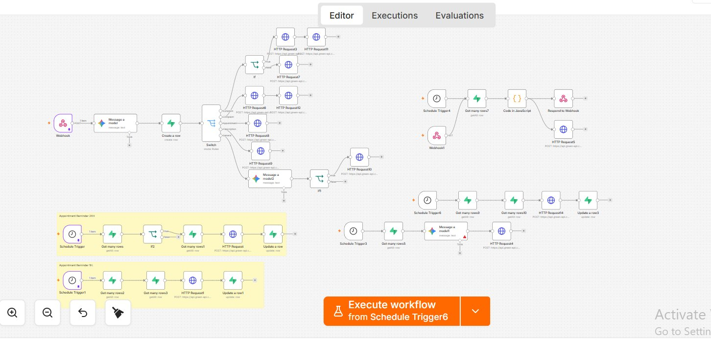

Five automated workflows managing the full patient communication cycle for a medical clinic via WhatsApp.
Clinic staff were manually sending appointment reminders, managing triage responses, and compiling daily reports — all through personal WhatsApp accounts with no system behind them. Messages were missed, responses were delayed, and there was no record of interactions.
I built five connected n8n workflows on GreenAPI: a triage workflow that reads patient messages and routes them via Gemini AI, an appointment reminder workflow that runs on schedule, a prescription notification workflow, a health tips broadcast, and a daily reporting workflow that compiles all interactions to Supabase and displays them on a Lovable dashboard.

Full n8n workflow canvas showing all five connected workflows
Supabase database logging all patient interactions